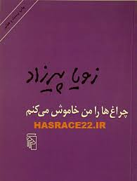

هانریش بل
عقاید یک دلقک اثری ماندگار از هاینریش بل نویسنده شهیر آلمانی است که توانست هاینریش بل را به جایزه نوبل ادبی سال ۱۹۷۲ برساند . این اثر درباره دلقکی مشهور است که تقریبا از مهم ترین اتفاقات زندگی اش با مخاطب صحبت می کند ، از این که چطور با همسرش که تمام دنیایش شده بود آشنا می شود ، چگونگی آشنایی اش با نازی ها را به تفصیل بیان می کند، حتی ورودش به عرصه کمدینی و دلقک بودن را شرح می دهد.
ازاتفاقی که باعث شد از دلقکی پرطرفدار و شناخته شده به دلقکی خانه نشین و طرد شده می گوید.این که بی پولی و مشکلات مالی چطور باعث شده است مشکلات مذهبی اش با ماری ، همسرش ، غیر قابل حل به نظر بیاید و در نهایت ترک شدن توسط ماری و تبدیل شدن زندگی اش به هزارتویی بی سر انجام می گوید.
فردریک بکمن
کتاب مردی به نام اوه به قلم فردریک بکمن، با نزدیک کردن مرزهای کمدی و تراژدی، داستان زندگی مردی را روایت میکند که همسرش را از دست داده و به تنهایی زندگی میکند.
مردی به نام اُوِه (A man called Ove) داستان روزگار پیرمردی 59 ساله و عبوس است که به علت داشتن سن زیاد، از سر کار اخراج شده. او که بسیار عاشق همسرش بوده، پس از مرگ وی با دنیای بیرون ارتباط برقرار نمیکند و مدام اوقات تلخی دارد.
کتاب مردی به نام اوه به محض ورودش به بازار سوئد فروشی بیش از ششصد هزار نسخه را به خود اختصاص داد و در صدر پُرفروشترین کتابهای سال قرار گرفت. این کتاب همچنین در سال 2014 به زبان آلمانی ترجمه و در آن کشور نیز به فروش میلیونی دست یافت.
پل آمیر
حسن صباح رهبر فرقهی «باطنی» بود؛ فرقهای از مذهب اسماعیلیه که همانند همه شیعیان، امام علی (ع) را امام اول و فرزندان او را تا امام جعفر صادق پیشوا و ولی امر مسلمین میدانست. اما از امام پنجم به بعد، پسرش موسی کاظم را امام نمیدانست و معتقد بود پسر دیگرش اسماعیل، امام است.
صباح در تشکیلات مذهبیاش از قوانین خاص خودش پیروی میکرد. به این صورت که فرقه اسماعیلیه بر مبنای برداشتهای شخصی صباح از قرآن و اسلام اداره و هر اجباری به دین اسلام و کتاب خدا نسبت داده میشد. با این عنوان که قرآن علاوه بر مفاهیم ظاهری دارای معانی باطنی نیز بوده و فقط حسن صباح میتواند آنان را درک کند. بدین ترتیب انجام هر عملی درون فرقه توجیه میشد.
ایرج پزشکزاد
all
کتاب دایی جان ناپلئون، یکی از بهترین رمان های ایرانی، را بسیاری در ژانر نوظهور «داستان بلوغ» طبقهبندی میکنند.
در این ژانر، معمولا قهرمان داستان نوجوان یا جوان است که در طول قصه تغییراتی را پشتسر میگذارد که سبب رشد و بلوغ شخصیتش میشود. معمولا کتابهای ژانر بلوغ با ژانرهای دیگر ترکیب میشوند. «هری پاتر» اثر جی.کی.رولینگ از بهترین نمونههای غربی این ژانر است. کتاب دایی جان ناپلئون نمونهی بینظیر این ژانر در ادبیات فارسی است.
داستایفسکی
کتاب قمارباز اثری زیبا و مهم از نویسندهی مشهور و تاثیرگذار روس، فئودور داستایفسکی، است. قمارباز، حکایت عشق حریصانهی مردی به قمار است. مردی که با هر برد حرصش بیشتر میشود و پشیمانی در کارش نیست.
فئودور داستایفسکی کتاب قمارباز را از روی زندگی خود نوشته است. زمانی که مهلت کمی برای پرداخت یکی از بدهیهایش داشته است. این اثر را با ترجمهای از جلال آلاحمد میخوانیم.
دربارهی کتاب قمارباز
رمان قمارباز درباره قمار است. درباره آدمهایی که هر چقدر میبرند حریصتر میشوند و هرچه میبازند پشیمان نمیشوند. درباره آدمهایی که همه زندگی خود را به پای شانس میگذارند.

زویا پیرزاد
چراغ ها را من خاموش می کنم، رمانی نوشته ی زویا پیرزاد است که اولین بار در سال 2002 به چاپ رسید. داستان این رمان در جنوب ایران می گذرد و ماجرای مشکلات یک زن خانه دار ایرانی-ارمنی در برآورده کردن توقعات خانواده اش را روایت می کند. کلاریس که همسر و مادری نمونه است، زندگی بسیار معمولی و بی اتفاقی دارد. او تمام چیزی که همیشه می خواسته را دارد: شوهری موفق و سه فرزند که همگی با هم در محله ای خوب و آرام در آبادان زندگی می کنند. کلاریس در روتین تسلی بخش نظافت خانه، آشپزی، خیاطی و خرید زندگی می کند و بزرگترین نگرانی او، حفظ رابطه ی خوب خود با مادر سخت گیرش، خواهر مجردش، شوهر نه چندان صمیمی اش و بچه های شلوغ و بازیگوش خود است. اما این سکون و آرامش زمانی برای همیشه از بین می رود که یک خانواده ی ارمنی اسرارآمیز همسایه ی آن ها می شوند. پس از این اتفاق، کلاریس وارد دنیای جدیدی می شود که سردرگمی های زیادی برایش به همراه خواهد داشت.
ژان تولی
یکی از معروفترین کتابهای کمدی سیاه مغازهی خودکشی به قلم ژان تولی است. شما با خواندن این کتاب به شهری در آیندهی دور میروید. جایی بینام و نشان که ممکن است با آن احساس نزدیکی کنید. در سال ۲۰۱۲ نیز از این کتاب یک انیمیشن فرانسوی ساخته شد.
یووال نوح هراری
کتاب «انسان خردمند» روایتی تاریخی و علمی از پیدایش و تکامل انسان است. نویسنده با بررسی زیستشناسی و تاریخیِ انسان صدهزار سال پیش تا انسان امروزی، درک ما را از انسان و بشریت افزایش میدهد. دکتر یووال نوح هراری، دانشآموخته دانشگاه آکسفورد و استاد تاریخ جهان دانشگاه اورشلیم است و این کتاب را در سال ۲۰۱۴ منتشر کرد. انسان خردمند تاکنون به بیش از چهل زبانِ زنده دنیا ترجمه شده و یکی از پرفروشترین کتابهای نیویورکتایمز است.
جوجو مویز
داستان کتاب دختری که رهایش کردی نوشتۀ جوجو مویز، درباره یک نقاشی مربوط به دوران جنگ جهانی اول است. این اثر دو زندگی، دو انسان، دو کشور و دو سرنوشت را به هم ربط داده است.
جوجو مویز در کتاب دختری که رهایش کردی (The Girl You left Behind) به گونهای زیبا و نوآورانه داستان خود را که به صورت موازی در دو زمان متفاوت با بازه زمانی ۱۰۰ ساله روایت میکند.
خالد حسینی
کتاب هزار خورشید تابان نوشتهی خالد حسینی روایتگر مردم ستمدیدهی افغانستان است و به داستان زندگی دو زن در دوران اشغال این کشور توسط شوروی و استقرار حکومت طالبان میپردازد. این کتاب هفتهها در گروه پرفروشترین کتابهای نیویورک تایمز قرار داشت.
رمان معروف هزار خورشید تابان (A thousand splendid suns) به زبان انگلیسی نوشته شده و به چندین زبان نیز ترجمه شده است. این رمان پس از رمان بینظیر و محبوب بادبادکباز انتشار یافته و برای خالد حسینی موفقیتهای چشمگیری را به ارمغان آورد.
آلبر کامو
بیگانه اثر آلبر کامو تازه از چاپ بیرون آمده بود که توجه زیادى را به خود جلب کرد. این مطلب تکرار مىشد که این اثر «بهترین کتابى است که از متارکه جنگ تاکنون منتشر شده»؛ در میان آثار ادبى عصر ما، این داستان خودش هم یک بیگانه است.
«بیگانه» کتابی نیست که چیزی را روشن کند. انسان پوچ نمیتواند چیزی را روشن کند. انسان فقط بیان میکند و همچنین این کتاب کتابی نیست که استدلال کند. آقای کامو فقط پیشنهاد میکند و هرگز برای توجیه کردن آنچه که از لحاظ اصول، توجیهنشدنی است خود را به دردسر نمیافکند. پیامی که آقای کامو میخواهد با روشی داستان مانند ابلاغش کند، او را به تواضعی بزرگمنشانه و امیدوار میکشاند که عبارت از تسلیم و تفویض هم نیست.

میچ آلبوم
کتاب سهشنبهها با موری نوشتۀ میچ آلبوم از تأثیرگذارترین و پرفروشترین کتب انتشارات نیویورک تایمز است که از اکتبر 1997 تاکنون همواره در صدر جدول پرفروشترین کتابهای سال قرار داشته است. سهشنبهها با موری داستانی کاملاً واقعی از آخرین لحظات زندگی یک مرد بزرگ و استاد چیرهدست جامعهشناسی است.
پائولو کوئیلو
پائولو کوئیلو در کتاب کیمیاگر، داستان چوپانی اسپانیایی به نام سانتیاگو را روایت میکند که زادگاهش در اندلس را ترک و به شمال آفریقا میرود تا گنجی مدفون را در حوالی اهرام مصر پیدا کند. سانتیاگو در این راه با زنی کولی، مردی که خودش را پادشاه میداند و یک کیمیاگر آشنا میشود. او همچنین دل در گرو فاطمه، دختر صحرا میبندد. هیچکس نمیداند این گنج چیست و آیا سانتیاگو میتواند بر موانع راهش در صحرا غلبه کند یا نه؟! اما همه این افراد، سانتیاگو را در مسیر جست وجویش هدایت میکنند و این جستوجو به کشف گنجی مبدل میشود که فقط در درون آدمی، میتوان آن را یافت.
رابین شارما
رابین شارما در کتاب راهبی که فراریاش را فروخت، سعی دارد دریچهای از بعد برتر وجودمان را برایمان بشکافد، دریچهای که در 24 ساعت شبانه روز یا حتی شاید در همهی عمر، لحظهای هم به آن توجه نداشته باشیم، غافل از اینکه فقط اوست که میماند.
ژان تولی
کتاب تهوع، رمانی فلسفی از ژان پل سارتر است که به عقیدهی خودش بهترین اثر او به شمار میرود. این کتاب داستان مورخ جوانی به نام آنتوان روکانتن را روایت میکند که از افسردگی و انزوا رنج میبرد و هیچ پیوندی با افراد خانواده ندارد.
دارن هاردی
سرنوشت چیزیست که خودتان آن را میسازید. اگر میخواهید جادهی موفقیت را برای خود هموار کنید، کتاب اثر مرکب به قلم دارن هاردی راهگشای شما در این مسیر پر پیچ و خم است. کتابی که در حال حاضر در گروه پرفروشترین آثار نیویورکتایمز و آمازون قرار دارد.